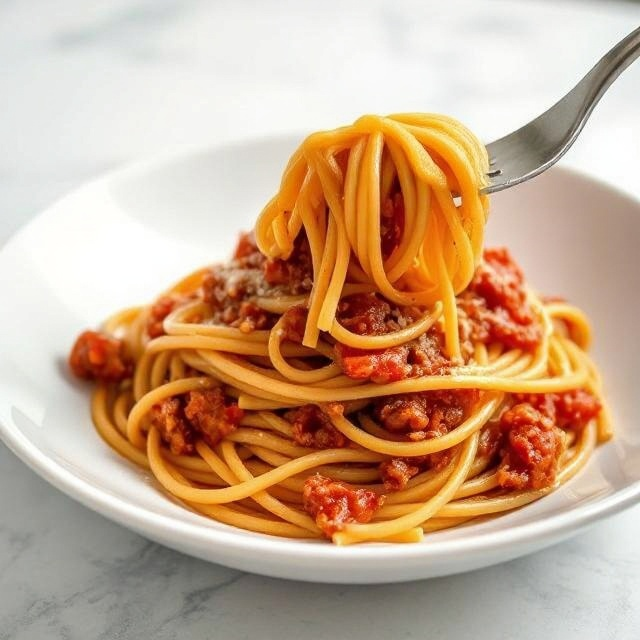

Spaghetti Bolognese

Description
This is a recipe for a Spaghetti Bolognese!
Ingredients
- 2 tablespoons olive oil
- 400g beef mince
- 1 onion, diced
- 2 garlic cloves, chopped
- 100g carrot, grated
- 2 tins chopped tomatoes
- 400ml beef stock
- 400g spaghetti
- salt and pepper
Recipe
- Heat a tablespoon of olive oil in a large saucepan.
- Once hot, add the beef mince with a pinch of salt and pepper. Cook at a medium-high heat until brown.
- Empty the pan into a bowl.
- Add another tablespoon of oil to the saucepan and lower the heat to medium.
- Fry the onions for 5-6 minutes.
- Add the garlic and cool for 2 minutes.
- Add back the mince and add the carrot.
- Mix in the tomatoes and pour in the stock.
- Bring to a simmer and lower the temperature to simmer for 45 minutes.
- Season to taste.
- Boil a separate pan of water and add the spaghetti.
- Cook the spaghetti until soft.
- Once cooked, drain the spaghetti and mix with the bolognese sauce.
- Enjoy!